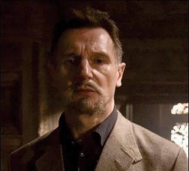

Бэтмен
Супергерой, персонаж комиксов издательства DC Comics, впервые появившийся в Detective Comics («Детективные комиксы») № 27 в мае 1939 года, Бэтмен является одним из самых популярных и известных героев комиксов.
Был создан художником Бобом Кейном в соавторстве с писателем Биллом Фингером.
Силы и способности
Бэтмен является одним из супергероев, не обладающих сверхспособностями, а использующих исключительно собственный интеллект и физическую подготовку. Бэтмен — лучший в мире детектив. В первой сюжетной линии Гранта Моррисона, JLA, Супермен описывает Бэтмена как «самого опасного человека на Земле», способного в одиночку победить целую группу пришельцев с суперспособностями. Он — мастер маскировки и часто пользуется именем известного гангстера Спички Мэлоуна для сбора информации внутри преступного сообщества. Кроме этого, персонаж часто описывался как один из величайших мастеров боевых искусств во вселенной DC, который успешно противостоял многим мастерам единоборств, таким как Леди Шива, Бронзовый Тигр и Ричард Дракон.
Не менее необыкновенными способностями являются возможности его ума. Так его IQ достигает значения 192, а аналитические способности не менее высоки. Совершенствуясь, он также изучал и различные науки: разгадывание загадок, биологию, математику, физику, мифологию, географию и историю, криминологию, информатику, химию; обладает идеальной фотографической памятью и дедуктивным мышлением.
Заклятые враги
| Джокер | Пугало | Двуликий | Ра’с аль Гул |
|---|---|---|---|
 |
 |
Награды
В мае 2011 года Бэтмен занял 2 место в списке «Сто лучших героев комиксов всех времён» по версии IGN[8], уступив Супермену.
За свою историю Бэтмен был удостоен множества наград, в том числе:
| Год | Награда | Категория | Номинант | Результат |
|---|---|---|---|---|
| 1987 | Премия Кирби | Лучший отдельный выпуск | Dark Knight № 1 | Победа |
| Лучшая законченная серия | Dark Knight № 1 | Победа | ||
| Лучший графичесий альбом | Dark Knight № 1 | Победа | ||
| Лучшая команда художников | Dark Knight № 1 | Победа | ||
| 1989 | Премия Айснера | Лучшая законченная серия | Batman: The Killing Joke | Победа |
| 1992 | Лучший графический альбом | Batman: The Killing Joke | Победа | |
| 1994 | Лучший писатель | Batman: Judgement on Gotham | Победа | |
| 1995 | Лучший художник | Batman Adventures: Mad Love | Победа | |
| 1996 | Лучший отдельный выпуск | Batman Adventures Holiday Special | Победа | |
| 1997 | Лучшая серия для молодых читателей | Batman & Robin Adventures | Победа | |
| 1998 | Лучший художник | Batman: Manbat | Победа | |
| 1999 | Лучшая антология | Batman: Black and White | Победа | |
| 2000 | Лучшая короткая история | «Heroes», Batman: Black & White | Победа | |
| 2002 | Лучшее издание для молодой аудитории | Batman & Robin Adventures | Победа | |
| 2003 | Лучший новый графический альбом | Batman & Superman Adventures: World’s Finest | Победа | |
| 2004 | Лучшая ограниченная серия | Batman: The Long Halloween | Победа | |
| 2007 | Лучшая серия для молодой аудитории | Batman: The Gotham Adventures | Победа |